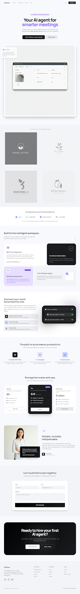
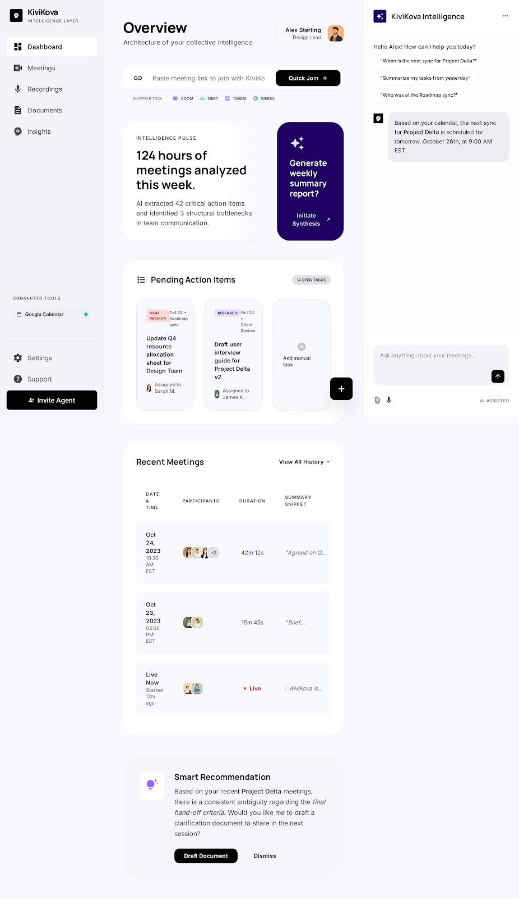
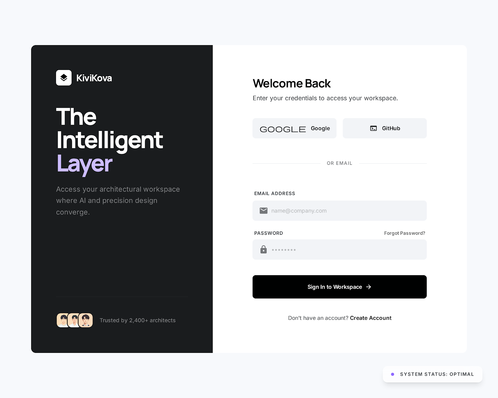
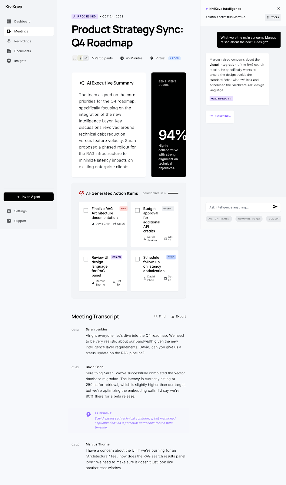
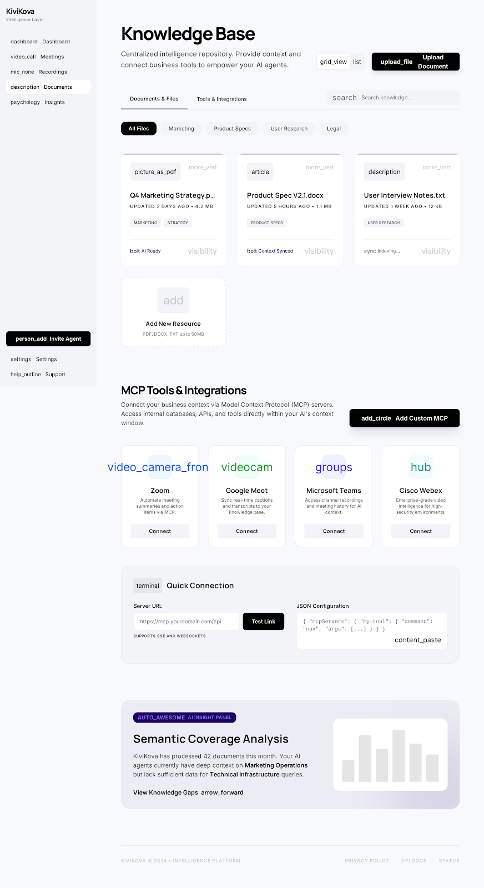
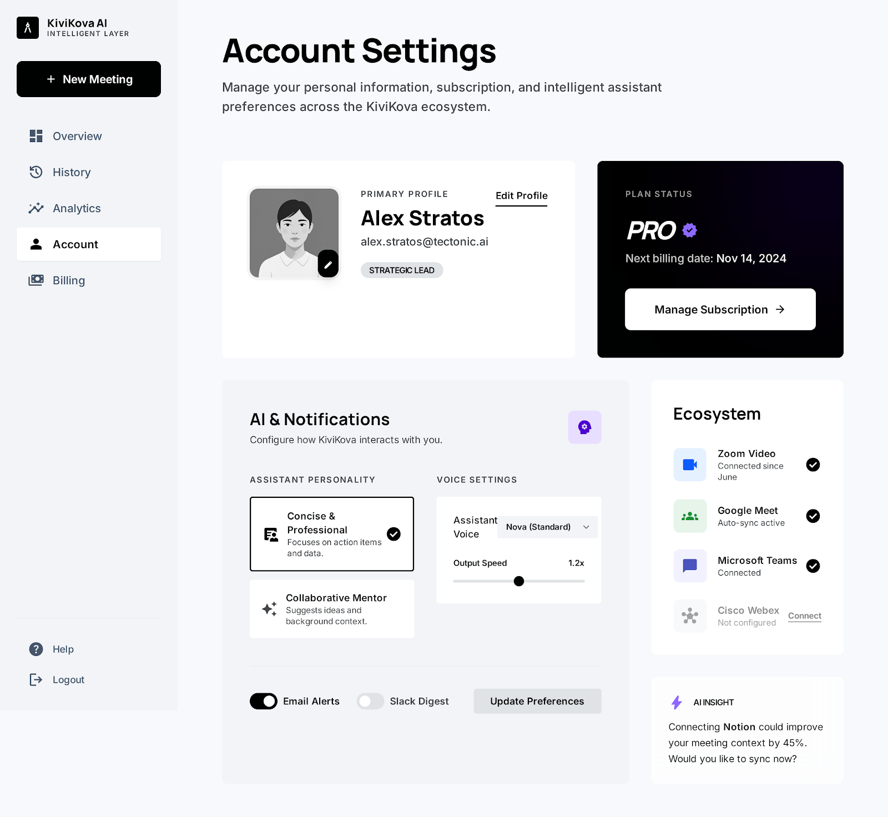

Be in meetings cool,
calm and collected.
Your AI meeting agent — Zoom, Meet, Teams, Webex
Built by Tim Borovkov & Pauli Mankinen
Meetings are the biggest time sink in modern work.
Decisions and action items disappear when the call ends.
What if every meeting built a searchable knowledge base?
Three steps. Zero manual work.
Paste your meeting link. KiviKova joins Zoom, Meet, Teams, or Webex automatically.
Live voice agent transcribes everything. Ask it questions — it answers using context from all your meetings.
AI summary, full transcript, participant tracking, and cross-meeting search — all automatic.
Say "KiviKova, what did we decide last week?" — get an answer grounded in your actual meetings.
An AI participant that actually helps during the call.
KiviKova joins your call with a live voice agent powered by OpenAI's Realtime API. It listens to the conversation and responds when you say "KiviKova", "Agent", or "Assistant". It searches across all your past meetings to find relevant context.
Searches transcripts from current and past meetings to give accurate, grounded answers.
Only speaks when addressed. Low-eagerness VAD ensures it never interrupts humans.
Your AI agent for smarter meetings.
Dashboard with meeting history, status filters, search, and real-time polling.
Works with Zoom, Google Meet, Microsoft Teams, and Cisco Webex.


Your meeting command centre.
Find meetings by status, title, or content. Real-time status updates every 5 seconds.
Join agent, stop recording, delete — with confirmation dialogs and loading states.
Sign in to your personal workspace.
Email/password, Google, or GitHub. Powered by NextAuth v5 with JWT sessions.
Every user sees only their own meetings, transcripts, and summaries. Full ownership checks on all endpoints.

Every meeting becomes searchable.
Key decisions, discussion points, and action items — generated automatically after the call.
Speaker-labelled timeline with vector search across the entire transcript.


Extend the agent's intelligence.
Upload docs, specs, and research. Indexed and searchable by the AI alongside meeting context.
Connect external tools via MCP — Jira, Calendar, Slack, and more. Configure like Claude Desktop.
Personalise the AI to work the way you do.
Choose between concise and professional or collaborative mentor. Adjust voice and speed.
Connected to Zoom, Meet, Teams, and Webex. Notifications via email or Slack digest.

Production-grade architecture.
App Router, TypeScript, Drizzle ORM, PostgreSQL. 140+ tests, full type safety.
OpenAI embeddings → Qdrant vector DB. Per-meeting collections with cross-meeting search and score boosting.
Live bidirectional audio via Recall.ai Output Media. Ephemeral tokens, semantic VAD, function calling.
Auth with NextAuth v5 • Sonner toasts • Polling • Confirmation dialogs • 140+ unit & integration tests
Built and shipping. Here's what's coming.
KiviKova becomes your team's collective memory — every decision searchable, forever.
Be in meetings cool,
calm and collected.
Every meeting. Remembered. Searchable. Actionable.
Built by Tim Borovkov & Pauli Mankinen